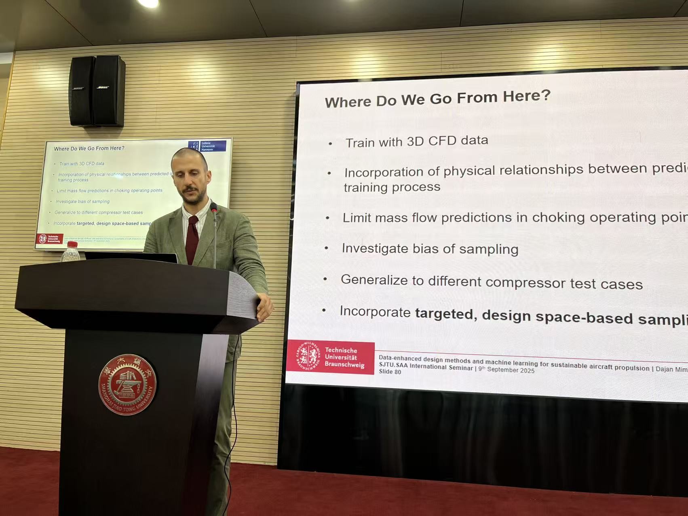
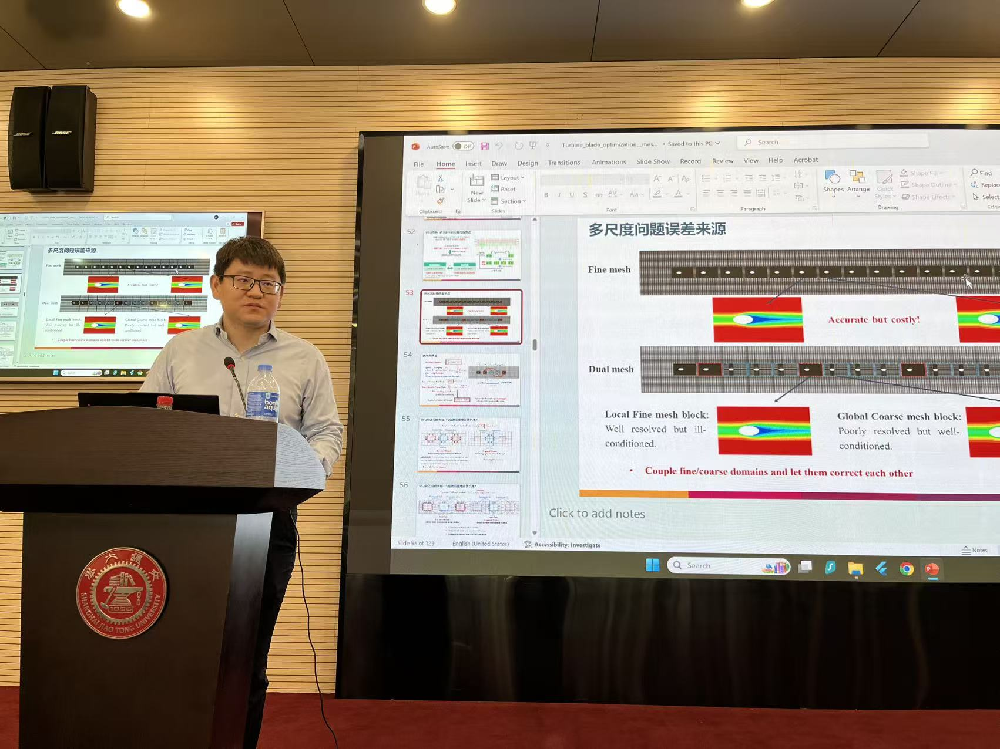
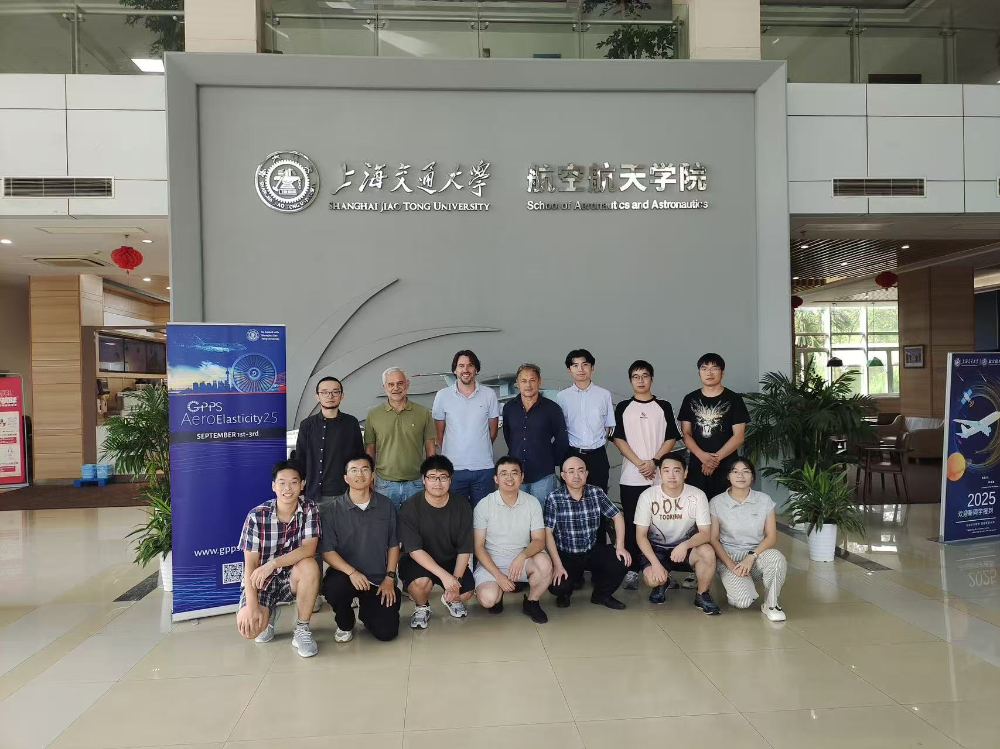
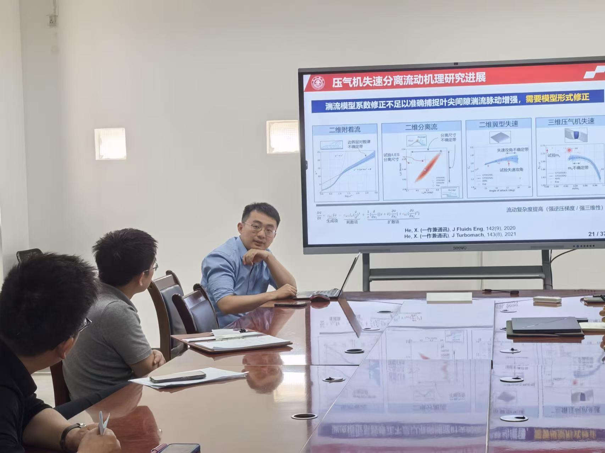
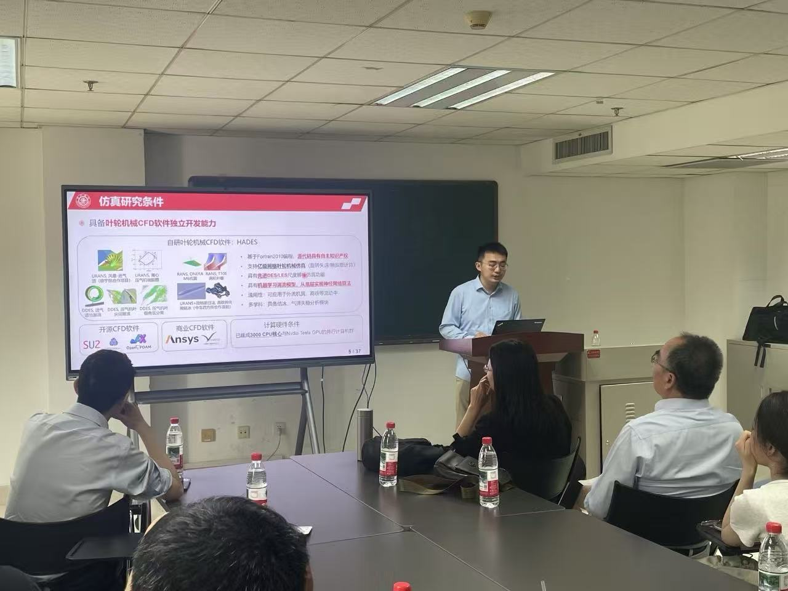
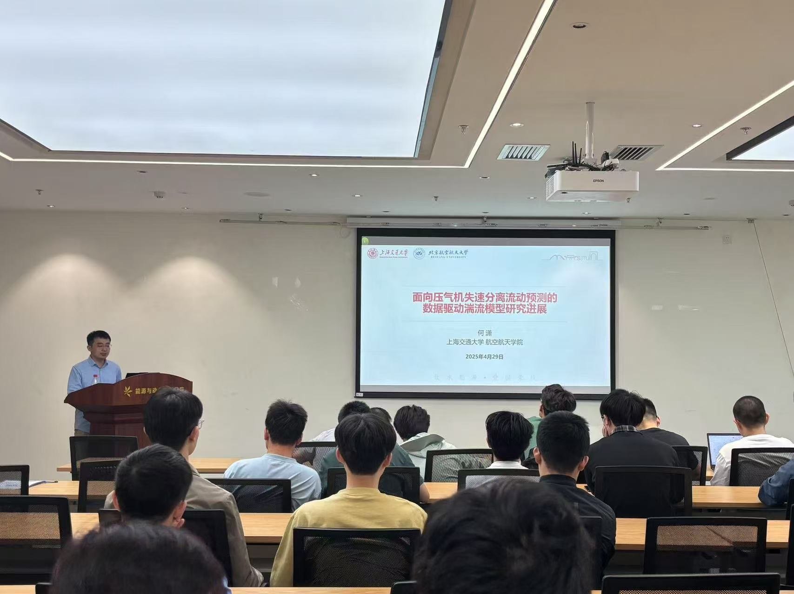

September 2025:
- 💡 Dr. Dajan Mimic from Leibniz University Hannover visited us and gave a talk entitled "Data-Enhanced Design Methods and Machine Learning for Sustainable Aircraft Propulsion". 
- 💡 Prof. Penghao Duan from City University of Hong Kong visited us and gave a talk entitled "Multi-Scale Multi-Fidelity CFD Algorithm Research in Turbine Blade Optimization". 
- 🌐 Xiao organized the GPPS 5th CFD Workshop at GPPS Shanghai25 Technical Conference, Shanghai, China.
- 🌐 We host the GPPS Aeroelasticity Course at SAA, SJTU. 
August 2025:
- 🪙 We were awarded the Young Scientist Fund by the National Natural Science Fundation of China (NSFC).
June 2025:
-
📜 Three papers from our lab were presented at ASME Turbo Expo 2025, Memphis, Tennessee, USA:
- "Multiscale Data-Driven RANS Closure for Trailing Edge Cutback Film Cooling Flows"
- "Optimisation of SA-PGω Turbulence Model for Multi-Stage Compressor at Off-Design Conditions"
- "Study on the Loss Characteristics and Flow Mechanism of Cantilevered Cascade With Moving Endwall Under the Influence of Upstream Wake"
May 2025:
- 🎤 Xiao gave a seminar talk at School of Power and Energy, Northwestern Polytechnical University. 
- 🎤 Xiao gave a seminar talk at School of Energy and Power Engineering, Xi'an Jiao Tong University. 
April 2025:
- 🎤 Xiao gave a seminar talk at School of Energy and Power Engineering, Beihang University. 
- 🎤 Xiao gave a seminar talk at Digital Twin Research Center, Institute of Engineering Thermophysics, Chinese Academy of Science.
March 2025:
- 📜 Our paper "Mechanisms of Cavity Windage Heating on the Performance of an Axial Compressor" has been published in Physics of Fluids. Congratulations Runzhu!
- 📜 Our paper "Loss Mechanisms of Shrouded Stator Cavity Flow in an Axial Compressor" has been published in the prestigious Journal of Propulsion and Power. Congratulations Runzhu!
February 2025:
- 🌟 The HeX Lab is officially established, associated with School of Aeronautics and Astronautics, Shanghai Jiao Tong University.